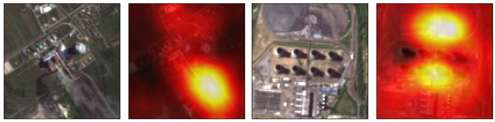
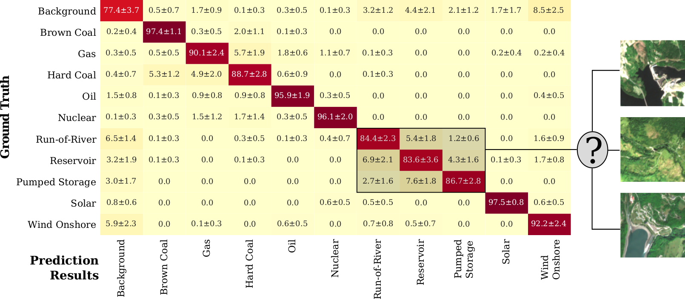

The industrial and power-generating economic sectors emit more than half of the annually and globally released greenhouse gas emissions, strongly contributing to global warming effects. In our recent work (Mommert et al. 2020) we laid the foundation to estimating greenhouse gas emissions from industrial sites by characterizing industrial smoke plumes from remote imaging data only. That work is part of a bigger effort to estimate greenhouse gas emission rates from satellite imagery for individual industrial sites. In this work, we made one further step towards achieving this goal.
Different industrial sites contribute very differently to emission inventories. For instance, light industrial plants typically produce less greenhouse gas emissions than coal-powered power plants. It is prudent to account for the nature of industrial sites when trying to estimate their emission budget.
In this work, we investigate the possibility to identify different types of power plants from Sentinel-2 satellite imagery. We distinguish between 10 different power plant types: fossil-fuel driven power plants utilizing brown coal, gas, or hard coal, nuclear power plants and power plants utilizing regenerative energy sources involving water (run-of-river, reservoir and pumped storage designs), solar, and wind.
{kind=link}

Using a ResNet-50 deep learning model, we are able to achieve a mean accuracy of 90.0% in distinguishing 10 different power plant types and a background class that contains random satellite image tiles. We also find that we are able to identify the cooling mechanisms utilized in thermal power plants with a mean accuracy of 87.5%. A confusion matrix (see below) reveals the limitations of our approach: the degree of confusion is highest for power plants that utilize similar energy source (e.g., hydro-electric plants) or reside in similar geographic settings. This shortcoming can likely be addressed with a larger training data set - this study is based on 4,154 images of 450 different power plants grouped in 10 different power plant types. Finally, we utilize class activation maps to improve the interpretability of our results and find that our trained model takes advantage of unique features of different power plant types: oil storage structures, coal heaps, wind turbines, or dams.
{kind=link}

Our results enable us to qualitatively investigate the energy mix from Sentinel-2 imaging data, and prove the feasibility to classify industrial sites on a global scale from freely available satellite imagery. Motivated by the success of this work, we will extend it in the future to classify a more diverse set of industrial sites. In addition to socio-economic applications, such a classifier will support us in estimating greenhouse gas emissions for any industrial site on Earth from remote imaging data.
This work was presented at the IEEE International Geoscience and Remote Sensing Symposion (IGARSS) 2021.
Resources
- Mommert, M., Scheibenreif, L., Hanna, J., Borth, D., “Power Plant Classification from Remote Imaging With Deep Learning”, IEEE International Geoscience and Remote Sensing Symposium 2021 (IGARSS 2021); publication, arxiv.